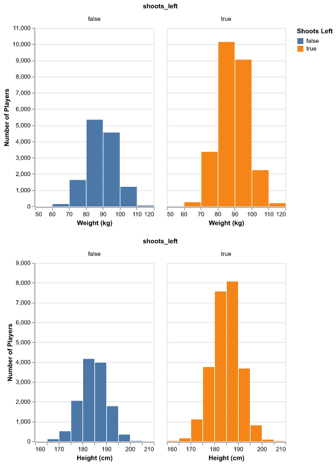
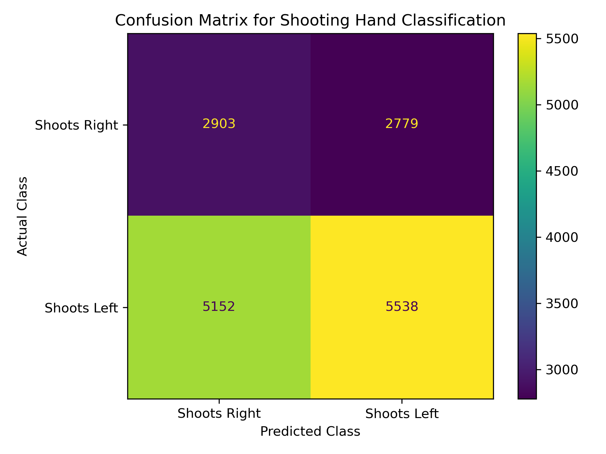

| Column | Non-null count | Null count |
|---|---|---|
| weight_in_kilograms | 38200 | 0 |
| height_in_centimeters | 38200 | 0 |
| shoots_left | 38200 | 0 |
NHL Player Shooting Hand Predictor
Summary
Is there a correlation between a National Hockey League (NHL) player’s height/weight and their shooting hand? We endeavoured to solve this using a logisitic regression model and a database of NHL players from the 1917 season till the 2023 season. After creating our model, we found there to be a weak correlation between these items as our model scored at 0.52 which is barely better than guessing.
Introduction
The relationship between a player’s various physical attributes can provide valuable insights to their performance within that sport. This report explores whether the shooting hand (left or right) of NHL players can be predicted based on their height and weight. To answer this question we used a logistic regression model. The model estimates the probability that a given height and weight corresponds to whether a player is left handed or right handed.
If the report provides a solid analysis, this information could help teams get more right handed shooters as they have a slight advantages over left handed shooters. In this report, we show the acquisition of the data, its preprocessing, creating and training a sklearn logisitic regression model, and our results. By analyzing patterns in the data, we aim to assess the strength of the relationship between a player’s height and weight and their preferred shooting hand.
Methods
Data
The data set for this shot predictor project is of National Hockey League (NHL) roster information created by the Data Science Learning Community (Community 2024) for the Tidy Tuesday project repository. The data here was created using the NHL’s API and loaded on to the Tidy Tuesday repository here. Each row in the data set contains information about all hockey players on every team from the 1917-1918 season to the 2023-2024 season. The rows include information such as name, birth date, and body dimensions.
Analysis
A logistic regression classifier was used to create a model which will predict whether a hockey player shoots left or right based on their height and weight. As the team is only interested in those two specific columns for predicting shooting side, all other columns were dropped. The test set was created using 30% of the records from the initial data set, leaving 70% of records for model training. For this analysis, the class weight parameter was set to balanced to ensure that the classes are equal and to avoid class imbalance. Data cleanup was done to remove duplicate records and null values and preprocessing was done on the height and weight input features to standardize them. To perform the analysis, the Python programming language (Van Rossum and Drake 2009) was used along with the following packages: Pandas (McKinney 2010), Altair (VanderPlas et al. 2018), and scikit-learn (Pedregosa et al. 2011).
Results and Discussion
Looking at the data
To start, we performed an exploratory data analysis on the training data to see if there was anything that stood out in the data, such as large class imbalances or unnexpected distributions. From Table 1, we can see that there is no missing data in our training set and we have a relatively large set of data to work from, specifically 38200 records. A large training set is important to ensure that our model does not overfit on the data. It is also important that missing data is minimalized otherwise the model could be using undesired information to make its prediction.
Figure 1 below shows the class distributions for our two features, indicating that there are more players who shoot left than players who shoot right. This is in line with the common knowledge that there are more right handed dominant people than left handed dominant. In hockey, players tend to put there dominant hand closer to the blade, so right hand dominant players will shoot left. Given this large class imbalance, it is important to adjust the model to account for this otherwise it would greatly favour making a prediction towards the class with more data.

What we found?
The logistic regression model yielded a weak correlation between an NHL player’s height and weight and their shooting hand. The model’s accuracy score on the test set was 0.52, barely above random guessing. We can also see from our confusion matrix in Figure 2 that our model is making incorrect predictions at about the same rate that it is making correct predictions as indicated by the difference between columns in the matrix.

Is this what we expected to find?
Given the complexity of human physical attributes and their possible influences on preferences, it was somewhat expected that height and weight alone would not be strong predictors of shooting hand. Shooting hand preference could be influenced by various factors, such as handedness, training, or cultural norms, which are not captured by the dataset.
What impact could such findings have?
These findings suggest that physical attributes like height and weight are not sufficient for predicting shooting hand. This highlights the importance of exploring additional features such as handedness, training history, or team strategy. For NHL teams, relying solely on height and weight for such predictions would not be effective for player scouting or strategy optimization.
What future questions could this lead to?
- What additional features (e.g., handedness, practice hours, family handedness trends) could improve the prediction of shooting hand?
- How do environmental or cultural factors influence shooting hand preference?
- Are there relationships between shooting hand and performance metrics, such as goals scored or defensive success?
- Can machine learning models combining multiple physical and behavioral attributes provide better predictions?
References
Community, Data Science Learning. 2024. “Tidy Tuesday: A Weekly Social Data Project.” https://tidytues.day.
McKinney, Wes. 2010. “Data Structures for Statistical Computing in Python.” In Proceedings of the 9th Python in Science Conference, edited by Stéfan van der Walt and Jarrod Millman, 56–61. https://doi.org/ 10.25080/Majora-92bf1922-00a .
Pedregosa, F., G. Varoquaux, A. Gramfort, V. Michel, B. Thirion, O. Grisel, M. Blondel, et al. 2011. “Scikit-Learn: Machine Learning in Python.” Journal of Machine Learning Research 12: 2825–30.
Van Rossum, Guido, and Fred L. Drake. 2009. Python 3 Reference Manual. Scotts Valley, CA: CreateSpace.
VanderPlas, Jacob, Brian Granger, Jeffrey Heer, Dominik Moritz, Kanit Wongsuphasawat, Arvind Satyanarayan, Eitan Lees, Ilia Timofeev, Ben Welsh, and Scott Sievert. 2018. “Altair: Interactive Statistical Visualizations for Python.” Journal of Open Source Software 3 (32): 1057.